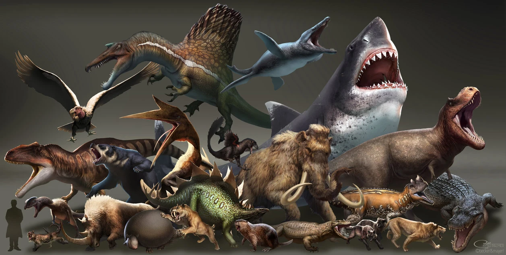

Ось тут ви бачете пару динозаврів
Динозаври вражають не лише своїми розмірами та грізним виглядом, але й дивними, унікальними особливостями. Серед них: Yi qi з крилами як у кажана, Нігерзавр з 500 зубами, та анкілозавр з хвостовою булавою. Ось кілька дивних видів динозаврів: Yi qi: Цей динозавр, рештки якого знайшли в Китаї, має крила, схожі на кажанячі, що було незвично для динозаврів. Нігерзавр: Цей динозавр мав 500 зубів, розташованих у 68 рядів на верхній щелепі та 60 на нижній, що дозволяло йому харчуватися рослинами. Анкілозавр: Цей динозавр був покритий панциром, а на кінці його хвоста була велика кістяна булава, яка, можливо, використовувалася для захисту або у внутрішньовидових сутичках. Евплоцефал: Ще один динозавр з панциром та хвостовою булавою, але з більш вузьким черепом, ніж у анкілозавра. Птерозаври: Хоча формально не динозаври, а плазуни, що літали, вони також є дивними представниками мезозойської ери з крилами, що складалися з шкіри, натягнутої між видовженим пальцем і тілом. Ці та інші динозаври свідчать про неймовірне різноманіття життя в мезозойську еру та про те, що природа може створювати по-справжньому унікальні та дивовижні форми.